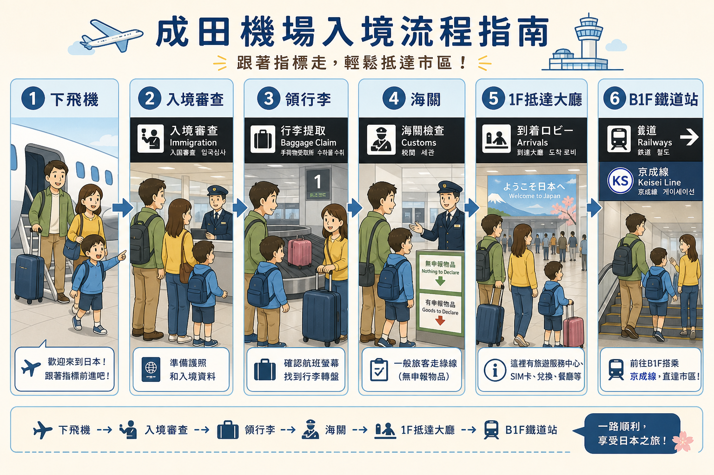
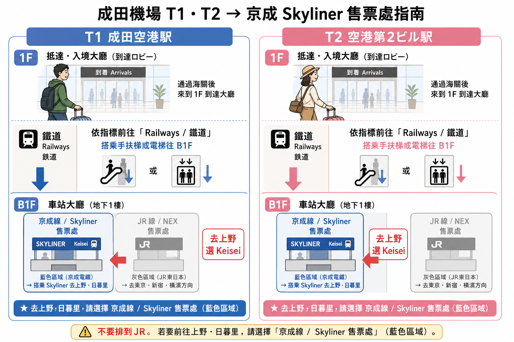
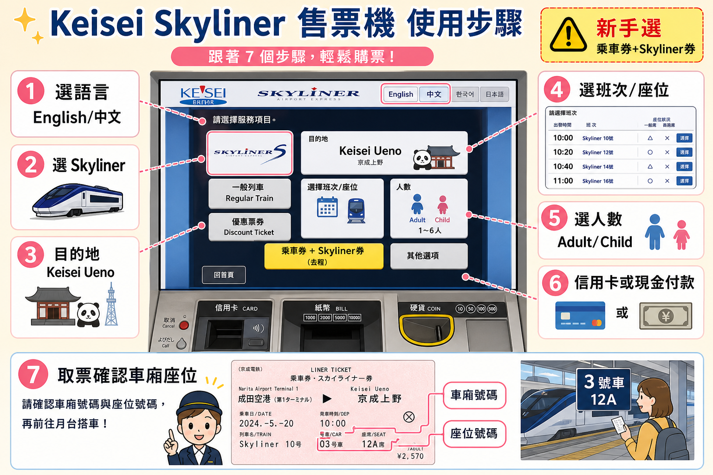
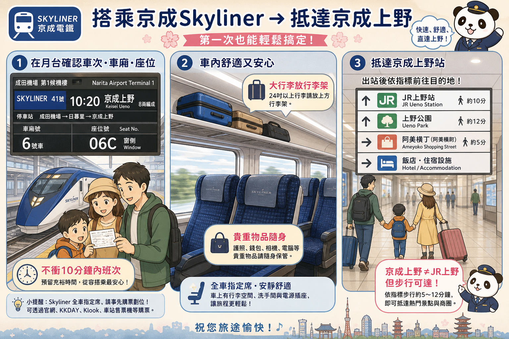

① 快速結論：住上野就搭京成 Skyliner
本趟住宿在上野，最推薦：成田機場 → 京成 Skyliner → 京成上野站。
優點是直達、全車指定席、有行李架，從機場站到京成上野約 41 分。下車後到上野飯店/阿美橫/御徒町一帶，比搭 N'EX 到東京站再轉 JR 更省力。
| 排名 | 方式 | 到上野方式 | 時間 | 成人單程費用 | 推薦度 |
|---|
| 1 | 京成 Skyliner | 成田 T1/T2 → 京成上野，直達 | 約 41 分 | 現場約 ¥2,580；IC 票價組合約 ¥2,567；網路折扣常見 ¥2,310 | ★★★★★ 住上野首選 |
| 2 | 京成本線特急 / 快特 | 成田 → 京成上野，普通電車 | 約 75–90 分 | 約 ¥1,060–1,280（依路線/IC/紙票） | ★★★ 省錢但拖行李累 |
| 3 | N'EX + JR | N'EX 到東京站 → 山手線到上野 | 約 70–90 分含轉乘 | N'EX 到東京約 ¥3,140 + JR 市區短程 | ★★ 不直達上野 |
| 4 | TYO-NRT 巴士 + JR | 巴士到東京站 → JR 到上野 | 約 90–120 分 | 巴士約 ¥1,500 + JR 市區短程 | ★★ 便宜但繞路 |
| 5 | 計程車/包車 | 門到門 | 約 60–90 分 | 約 ¥22,000–30,000+/車 | ★ 深夜或行李爆量才考慮 |
② 下飛機後共通流程：先完成入境，再找交通
1
下飛機 → 跟著 Arrivals / 到着 / 入境 指標不要一開始就找電車，先把入境、行李、海關完成。
2
入境審查準備護照、Visit Japan Web QR。小孩也各自要資料。
3
領行李看航班號碼找行李轉盤。先在這裡整理護照、手機、錢包，不要到售票機前才翻包。
4
海關申報掃 VJW 海關 QR 或走人工。完成後才會真正進入抵達大廳。
5
抵達大廳：先判斷要搭電車還是巴士去上野：跟著 Railways / 鉄道、Keisei Line、Skyliner 到 B1F。

看圖記法：下飛機後先完成入境、領行李、海關；出到 1F 抵達大廳後，再跟著 Railways / 鉄道 指標下到 B1F。
本趟建議節奏：12:25 抵達 → 13:20–14:00 左右出海關（視排隊）→ B1F 京成櫃台/售票機 → 選 14:00–14:40 之間的 Skyliner。行李多或小孩累時，寧可搭下一班，不要衝車。
③ 第一航廈 / 第二航廈：出海關後怎麼走到買票地點
Terminal 1 第一航廈
- 你會在 1F 抵達大廳出來。
- 找藍/綠色交通指標：Railways / 鉄道 / Train。
- 要搭 Skyliner：跟 Keisei Line / 京成線 / Skyliner 指標下到 B1F 成田空港駅（Narita Airport Terminal 1 Station）。
- 到 B1F 後會看到京成與 JR 區域；去上野請找 Keisei / Skyliner，不要排到 JR N'EX。
- 購票點：SKYLINER & KEISEI INFORMATION CENTER、Skyliner Ticket Counter、自動售票機。
Terminal 2 第二航廈
- 你會在 1F 抵達大廳出來。
- 找 Railways / 鉄道 / Train 指標，下到 B1F。
- 要搭 Skyliner：前往 空港第2ビル駅（Narita Airport Terminal 2・3 Station） 的京成線區域。
- 第二/第三航廈共用這個鐵道站；若你從第三航廈入境，需先走路或接駁到第二航廈。
- 購票點同樣有京成櫃台、資訊中心、售票機。
插圖式動線：T1/T2 都是一樣的邏輯
飛機下機→入境審查→領行李→海關→1F 抵達大廳↓B1F 鐵道站→Keisei / Skyliner
看到「JR EAST / N'EX」是 JR 區域；看到「Keisei / Skyliner」才是去京成上野最快的區域。

T1 與 T2 的邏輯相同：1F 抵達大廳出來後下 B1F，去上野請找藍色京成 / Skyliner 區域，不要排到 JR / N'EX。
④ 交通工具詳細比較：上野目的地版
| 方式 | 路線 | 換乘 | 行李友善 | 何時選 | 何時不要選 |
|---|
| Skyliner | NRT T1/T2 → 日暮里 → 京成上野 | 去京成上野不換 | 高：指定席+行李架 | 住上野/御徒町/阿美橫；第一次到東京；帶小孩行李 | 住新宿/澀谷/品川且不想轉車 |
| 京成本線特急 | NRT → 京成上野 | 多數可直達或少轉 | 低：一般車廂 | 想省錢、不趕時間、行李少 | 大型行李多、尖峰時間、小孩累 |
| Access Express | NRT → 押上/淺草/日本橋/東銀座方向，部分需青砥轉上野 | 看目的地 | 中低：一般車廂 | 住淺草、東銀座、日本橋、都營淺草線沿線 | 目的地是上野且第一次來，容易搭錯方向 |
| N'EX | NRT → 東京 → JR 山手線 → 上野 | 至少 1 次 | 高到東京，但東京站轉乘路長 | 住東京/品川/澀谷/新宿；有 N'EX 來回票需求 | 住上野，因為不直達且較貴 |
| 巴士 | NRT → 東京站/銀座 → JR/地鐵 → 上野 | 至少 1 次 | 高：行李放車底 | 住東京站/銀座，想便宜 | 趕時間、怕塞車、要直接到上野 |
⑤ Skyliner 手把手：從買票到上車
你要說的目的地：Keisei Ueno / 京成上野。如果飯店在 JR 上野站附近也可以到京成上野下車，兩站步行約 5–10 分，拖行李看飯店位置。
A. 已先在 Klook/KKday/京成官網買電子票
1
到 B1F 京成線區域找 Skyliner、Ticket、Voucher Exchange 類標示。
2
打開手機 QR / 憑證，到指定售票機或櫃台兌換。櫃台可直接說：I have an online Skyliner voucher to Keisei Ueno.
3
選班次：看最近一班是否太趕。拖行李+小孩建議至少留 10–15 分鐘 找月台。
4
拿到實體/QR 車票，確認 車次、出發時間、車廂、座位。
B. 現場用售票機/櫃台買 Skyliner

售票機重點：語言 → Skyliner → Keisei Ueno → 班次/座位 → 人數 → 付款 → 確認車廂座位。新手選「乘車券 + Skyliner券」最不容易出錯。
| 畫面/步驟 | 按什麼 | 注意 |
|---|
| 語言 | 選 English / 中文 / 한국어 | 不確定就選英文，站名較不會翻譯錯。 |
| 票種 | 選 Skyliner 或 Liner Ticket + Boarding Ticket | 第一次搭、沒有 Suica 時，選「乘車券+Skyliner券」最穩。 |
| 目的地 | Keisei Ueno 或 Ueno | 不要選 JR Ueno；這是京成上野。 |
| 班次 | 選出發時間 | 若距離出發少於 10 分鐘，建議下一班。 |
| 人數 | Adult / Child | 6–11 歲通常兒童票；未滿 6 歲規則依佔位/同行成人數而定，現場確認。 |
| 付款 | 現金或信用卡 | 京成官方列示主要信用卡可購買 Skyliner 票或組合票；一般普通票可能需現金。 |
| 出票 | 取票與收據 | 確認有沒有兩張票：基本乘車券 + Skyliner 指定席券，或整合式票券。 |
C. 用 Suica/PASMO + 只買 Skyliner 特急券
- 若每人手機已綁 Suica，可用 Suica 付基本運賃，再另外買 Skyliner 指定席券（特急券）。
- 費用概念：基本運賃 IC 約 ¥1,267 + Skyliner 特急券 ¥1,300 = 約 ¥2,567。
- 新手不建議第一次就拆票操作；最簡單是買「乘車券 + Skyliner券」整包。
上車與抵達

上車前看月台電子看板與車票；車上大行李放行李架。抵達京成上野後，再依飯店位置步行往 JR 上野、上野公園或阿美橫。
成田 T1/T2 京成站→Skyliner 指定席→日暮里→京成上野→飯店/阿美橫
- 進站後看電子看板：車次、時間、月台。
- 月台上排隊時不要離行李太遠；上車後大型行李放行李架，貴重物品隨身。
- 到日暮里時很多人會下車轉 JR；你住上野可繼續坐到終點 京成上野。
- 京成上野站出站後，若要 JR 上野/飯店，可跟 Ueno Park / JR Ueno / Shinobazu Exit 等指標走，或直接開 Google Maps 步行。
最常見錯誤：只買了 Skyliner 特急券，卻沒有基本乘車券/IC 卡餘額；或買到下一站/錯方向普通票。新手請直接櫃台說「Skyliner to Keisei Ueno, adult/child, next available train」。
⑥ 省錢電車：京成本線 / Access Express
京成本線特急 / 快特到上野
- 最便宜，約 ¥1,060–1,280 級距，依 IC/紙票與路線而定。
- 時間約 75–90 分，普通車廂，沒有指定座位。
- 行李多時不舒服；尖峰可能站著。
- 適合：背包客、行李少、想省錢。
Access Express
- 常往押上、淺草、日本橋、東銀座、羽田方向直通。
- 若目的地是上野，不一定是最直覺；可能需青砥/日暮里等轉乘。
- 適合住淺草/東銀座/日本橋，不是本趟上野主選。
普通電車售票機請看清楚「目的地」與「經由」。如果班次寫往 羽田空港 / 西馬込 / 押上，通常不是直達京成上野的車。
⑦ N'EX：為什麼去上野不推薦，但仍要知道
- N'EX 直達東京、品川、澀谷、新宿、橫濱等，但不直達上野。
- 若用 N'EX 到上野：成田 → 東京站，然後轉 JR 山手線/京濱東北線到上野。
- 東京站轉乘距離長，拖行李與小孩會比較累。
- 票價：成田到東京普通車約 ¥3,140；外國旅客可買 N'EX TOKYO Round Trip Ticket 約 ¥5,200（14 天內一進一出）。
如果真的要搭 N'EX，售票機怎麼操作？
- 到 B1F 找 JR EAST / Narita Express 區域。
- 選指定席售票機或 JR EAST Travel Service Center。
- 選語言 → Reserved Seat / Narita Express → destination Tokyo（去上野需轉車）。
- 選班次、座位、人數、付款。
- 到東京站後跟 JR Yamanote Line / Keihin-Tohoku Line 指標到上野方向月台。
⑧ 機場巴士：便宜到東京站，但去上野要再轉
- TYO-NRT Airport Bus：成田 → 東京站/銀座，成人一般時段約 ¥1,500，深夜/清晨約 ¥3,000。
- 到東京站後再轉 JR 山手線/京濱東北線到上野，整體時間容易 90–120 分。
- 優點：便宜，行李放巴士底艙，不用自己拖著上下電車月台。
- 缺點：路況不可控，班次/乘車口要現場看清楚；不是上野最直接路線。
巴士購票與乘車
- 出海關後留在抵達層，不要下 B1F。
- 找 Bus Tickets / Bus Stop 櫃台。
- 告知目的地：
Tokyo Station 或 Ginza，選最近可搭班次。
- 拿票後到指定巴士站；把大行李交給工作人員放車底。
- 到東京站後，開 Google Maps 找 JR 上野方向，或搭計程車到飯店。
⑨ 計程車 / 包車：深夜、多人、行李爆量時才考慮
| 方式 | 費用概念 | 優點 | 注意 |
|---|
| 一般計程車 | 到上野約 ¥25,000–30,000+，依路況與夜間加成 | 門到門 | 非常貴；尖峰塞車也會跳表 |
| 事前預約包車 | 常見約 ¥18,000–30,000+/車，依車型 | 適合多人/嬰兒車/深夜 | 需提前預約，確認等候時間與航班延誤規則 |
| 共乘接送 | 約 ¥6,000+/人起 | 比包車便宜 | 可能等其他旅客，時間不可控 |
⑩ 常見錯誤與現場求救句
錯誤 1：排錯公司
去上野首選是 Keisei / Skyliner，不是 JR N'EX。看到 JR EAST 就先停下來確認。
錯誤 2：只買特急券
Skyliner 需要基本乘車券 + 指定席特急券。新手直接買組合票。
錯誤 3：想衝最近班次
出發前不到 10 分鐘，不要帶小孩拖行李衝月台；下一班更安全。
錯誤 4：京成上野與 JR 上野混淆
Skyliner 終點是京成上野。出站後再步行到 JR 上野或飯店。
給櫃台看的句子
Skyliner to Keisei Ueno, next available train, please.Two adults and one child. We have large luggage.I have an online voucher. Where can I exchange it?Can I use a credit card?Which platform should we go to?
⑪ 回程：上野 → 成田機場反向操作
本趟 Day7 建議：Day6 晚上先在京成上野站劃位/買好 Skyliner，Day7 拖行李時就不用排隊。
1
京成上野站找 Skyliner 售票機/櫃台買 8/18 回成田機場的指定席。
2
確認航廈航空公司在 Terminal 1 還是 Terminal 2/3，一定要選對下車站。
3
Day7 最晚 16:00–16:30 左右離開上野20:40 起飛，抓 17:00–17:20 抵成田較穩。
回程若買錯航廈站，Terminal 1 與 Terminal 2/3 雖可移動，但拖行李會浪費時間。出發前用航空公司訂位資料確認航廈。
⑫ 抵達日 Checklist
- ☐ Visit Japan Web 全員 QR 準備好，手機有網路/電量。
- ☐ 每人護照、機票、飯店地址截圖。
- ☐ 決定主路線：Skyliner → 京成上野。
- ☐ 若有線上票券：QR/憑證可離線打開。
- ☐ 若現場買：信用卡 + 少量日幣現金備用。
- ☐ 大行李先綁好吊牌，貴重物品隨身小包。
- ☐ 不衝最近班次；買票後先上廁所/買水，再進站。